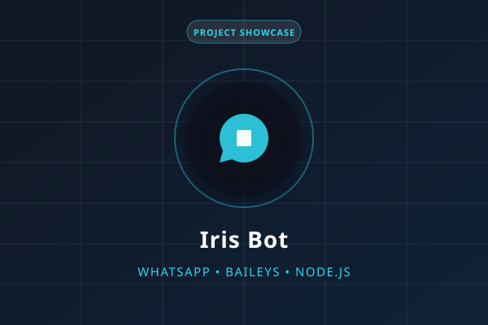

Bots WhatsApp
Iris Bot
Bot inteligente e multi-comandos para WhatsApp com Baileys e gestão avançada de eventos.
Desenvolvedor focado em criar experiências digitais modernas, funcionais e de alta performance. Especializado no ecossistema JavaScript, construção de interfaces web fluidas e desenvolvimento de bots inteligentes e automações avançadas para WhatsApp com Node.js e Baileys.
Conheça mais sobre a experiência profissional e aprendizado contínuo
Meu foco como desenvolvedor está na resolução de problemas do mundo real através da tecnologia. Seja desenhando uma interface intuitiva para a web ou arquitetando um bot de atendimento automático de alta vazão no WhatsApp, busco sempre a excelência técnica, código bem documentado e estabilidade a longo prazo.
Desenvolvimento focado em JavaScript ES6+, manipulação profunda do DOM, CSS Grid, Flexbox, consumo de APIs e boas práticas de arquitetura web.
Especialização na biblioteca Baileys para integração direta com a rede do WhatsApp Web, gerenciamento de sockets, tratamento de concorrência e persistência de sessões seguras.
Desenvolvimento de soluções personalizadas de bots para grupos e atendimento no WhatsApp, com disparo automatizado, regras de moderação e integração com bancos de dados.
Manutenção e desenvolvimento ativo de repositórios públicos como Iris Bot, Daisy Bot e Hiyuki Bot, além de clones de interfaces e jogos web.